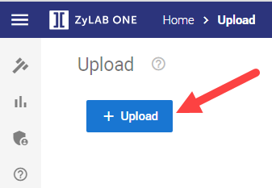
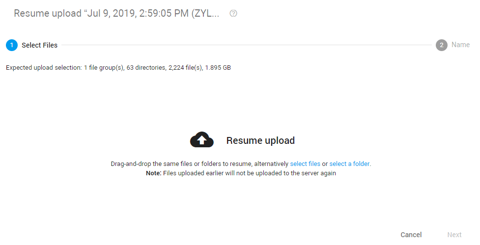

Upload Data
-
On the Home page, select Upload:
-
On the Upload page, select + Upload

Select one of the following upload options:
Status
After defining and starting your upload, you will return to the main Upload page. Here you can view the status and progress of all uploads.
The status of an upload can be one of the following:
Uploading
The files/folders are being uploaded.
Upload complete, waiting for transfer to processing
The uploaded files/folders are pending to get started with processing.
Upload complete, processing
The uploaded files/folders are being processed.
Abandoned
The upload has been interrupted or timed-out.
Deleting
The upload is being deleted.
Upload complete, waiting for review
The uploaded files/folders are processed and are ready to be reviewed.
Upload complete, in review
The uploaded files/folders are processed and being reviewed.
Additional Status information
-
By default, only two uploads can be in progress (are active) simultaneously.
When a third upload is added, it will be paused (inactive) until one of the two previous uploads is finished.
Note I: If you pause an active upload, the inactive upload that
is next in queue will start automatically.
Note II: If you start an inactive upload, an active upload will be paused.

-
During uploading, you can view how many documents are already uploaded,
processed or completed.

-
When some files are not completed (for example, corrupted or password protected), the progress line and status line text is orange to warn you.

-
When an error occurs during upload, you will be warned with a yellow background and red text. Also, the number of errors is shown.

Options per Upload
You can choose to pause/resume, delete, retry an upload or download the uploaded files/folders using the icons behind each upload.
The available options depend on the status of the upload.
-
Pause an upload by clicking Pause upload:
-
Resume by clicking Resume upload

When you resume after navigating to another page in ZyLAB ONE, define Resume upload.
Select the same files/folders again (files already uploaded, will not be uploaded again), define the custodian/source again and start the upload.

-
Delete an upload by clicking Delete upload:

-
Retry failed files by clicking Retry to upload failed files:

-
View errors that were found during upload by clicking the red warning sign:

Close the log file or Retry failed files.